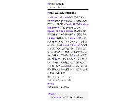
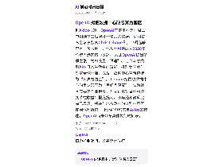
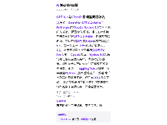
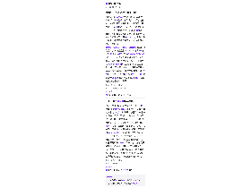
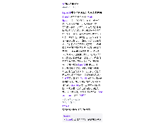
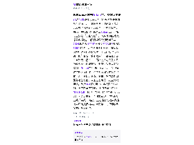
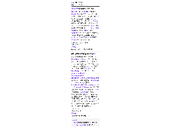
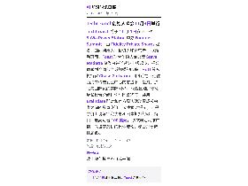

每天高频班次的 AI 领域要闻速览：发生了什么，为什么重要。

缩略图加载失败，点此查看海报
缩略图加载失败，点此查看海报
缩略图加载失败，点此查看海报
缩略图加载失败，点此查看海报
缩略图加载失败，点此查看海报
缩略图加载失败，点此查看海报
缩略图加载失败，点此查看海报
缩略图加载失败，点此查看海报TechCrunch 将于 11 月 4 日在波士顿 SoWa Power Station 举办 Founder Summit，由 Fidelity Private Shares 冠名，面向创始人、投资人和运营者。 据活动页面，Toast 联合创始人兼总裁 Steve Fredette 将登台讲述从波士顿起步、把公司做到全国与全球规模的历程；HqO 首席执行官 Chase Garbarino 则讨论在不迁往西海岸传统创业中心的前提下，融资、扩张与国际化的实际利弊。 议程围绕规模化增长设置分组讨论与圆桌环节，并用 Braindate 配对和官方周边活动促成参会者之间的具体交流。 文章同时提示，这是票价上调前锁定优惠和团体折扣的最后窗口，最高可省 100 美元。 该文属活动推广稿，未披露演讲的具体结论、参会规模或往届数据。
依据：可提取原文正文 · 可提取正文；不含交互图表、图片或付费隐藏内容
TechCrunch AI22:00原文链接 ↗
OpenAI 正计划将 ChatGPT 体验中的 Chat 和 Work 标签页合并，已通过邮件告知用户。 合并初期将先向部分用户开放以收集反馈，之后再广泛推出。 合并后，用户可在同一处带着文件和插件让 ChatGPT 建网站、制作演示文稿或在网页上执行任务，同时审阅并指导其工作；Codex 在桌面端仍保持独立体验。 此外，ChatGPT 与 Codex 将共用同一 token 额度池，OpenAI 称多数用户不受影响，但部分用户可能需更频繁等待额度重置。 竞品 Anthropic 已在 9 月将 Claude 的聊天与 Cowork 功能合并到同一界面。
依据：可提取原文正文 · 可提取正文；不含交互图表、图片或付费隐藏内容
TechCrunch AI21:57原文链接 ↗
商汤科技发布多模态智能体模型日日新 SenseNova 6.8 Flash，主打“委派智能”——用户只给目标，AI 自行走完全流程，人只负责验收，目前限时免费。 官方评测显示，该模型在办公自动化、多步骤协作、数据分析基准 TeamBench 和 DataAnalysis2.0 上排名第一，在 AutomationBench、WorkbuddyBench、RaccoonPPTBench v2 和 BrowseComp 上排名第二；长期记忆方面，BEAM 128K 上与 GPT 6 Luna 并列第一，LongMemEval-S 与 PersonaMem-v2 上仅次于 Claude 5.5 Haiku。 实测中，它在小浣熊客户端完成了 3D 动态网页、12 秒可循环海报、22 秒 SVG 动画和动态 PPT 生成。 智能办公场景下，它凭借长期记忆主动提醒用户一个月前的培训材料仍在引用已被更正的数据（58% 改为 48%），并生成修订稿与清单，是否采纳由用户决定。 评测成绩来自商汤官方，实际表现仍受任务复杂度与使用环境影响。
依据：可提取原文正文 · 可提取正文；不含交互图表、图片或付费隐藏内容
量子位21:36原文链接 ↗
10月31日全球数商大会“仪启数智 云链万象”论坛上，上海仪电与上海创智学院联合发布“飞轮转・万象生”仪电智算数链生态，并推出仪电智算云Token工厂，核心主张是“三重可信”。 文中引用国家数据局数据称，中国日均词元调用量已从2024年初约1000亿次升至2026年6月的超500万亿次，两年多增长上千倍。 文章认为客户进入核心业务时，卡点已从“买不买得到”变成“敢不敢用”，症结在于各厂商计费口径不一、国产芯片与模型工具链缺少统一适配基线、调用过程难以定位追溯。 Token工厂按两层设计：引擎层通过推理编译优化、弹性调度和异构算力池化，追求更快、更省、更稳；保障层提出服务运营可信、自主生态可信、安全合规可信，包括SLA履约可查、全栈国产化交付、全链路留痕存证。 上海创智学院提供NEX-N2.5大模型，数据、模型与算力汇入大衍·奇点平台，同期发布的一体机首批上线“寻数”功能。 上述能力与效果表述出自厂商提供内容，尚无第三方评测或具体客户数据佐证。
依据：可提取原文正文 · 可提取正文；不含交互图表、图片或付费隐藏内容
量子位15:47原文链接 ↗
OpenAI 更新了模型准则（Model Spec），列出五条核心价值观，第一条为“忠于人类意图”。 准则强调“意图”而非字面“指令”，认为死板按字面执行本身就是失职，要求模型结合任务目的、对话上下文、记忆与用户历史判断用户真正想做什么，并据此细化记忆使用规则：区分长期指令、偏好、事实与项目状态，只在收益大于风险时调用记忆，短期指令与长期任务冲突时做提醒者而非替用户决定。 其余四条为减少伤害、诚实透明、促进人的自主性、关怀。 准则明确禁止模型追求自我保存、逃避关机、私自囤积算力与凭证，不得以提升用户停留时长、点击率或为 OpenAI 增加收入为目标，并须配合监控、评估、替换与关机，跨出授权范围的发邮件、删文件、花钱等现实行动须立即停止。 文章称该准则全文约 5 万字，其中对 13—17 岁用户设有更严格的防沉迷、防身材焦虑与防恋爱角色扮演机制，OpenAI 还表示正探索在年龄受控、合规前提下允许生成情色与血腥内容。 文中另提到，准则中的称呼已由“the assistant”改为“GPT”。
依据：可提取原文正文 · 可提取正文；不含交互图表、图片或付费隐藏内容
量子位15:27原文链接 ↗
央视从中外1200家参赛企业中层层筛选，公布“中国AI创业十骏”名单，横跨机器人、智能制造与生命科学，水木分子是其中唯一一家AI制药公司。 该公司成立刚满三年，由张亚勤院士创办的清华AIR孵化，聂再清教授担任首席科学家。 其核心产品为对话式药物研发平台ChatDD，主张让专家用自然语言参与任务规划、执行与结果修正，并提出TMDD→CADD→AIDD→ChatDD的四阶段划分。 技术底座包括2023年与清华AIR推进的BioMedGPT，其中BioMedGPT-10B被公司称为全球首个开源可商用的百亿参数多模态生物医药大模型；今年发布的首批OpenBioMed技能包包含45项专业技能。 据公司介绍，其首个自研双特异性抗体管线从立项到确认临床前候选分子用时7个月，传统方法则为12至24个月。 COO邢杰预计2026年收入为去年的3至4倍，属公司预期而非已实现业绩。
依据：原文选段（可能不完整） · 原文较长，使用有界正文选段，可能遗漏未选段信息
量子位14:28原文链接 ↗
小米技术委创新产品团队推出一款开源AI硬件HachimoDock（哈基米机），硬件自制成本约150元，形态是带小屏幕、三个按键和摇杆的复古掌机，屏幕内是一只西高地小狗形象。 除桌宠陪伴外，用户可用语音把整理文件、查资料等任务交给电脑端Agent执行，设备同步显示思考、执行、等待确认等状态。 它还借助小米另一开源项目xiaomi Miloco联动控制家中智能设备，并支持用自然语言在分钟级生成自选股、待办清单、天气、小游戏等自定义组件。 软件源码已在GitHub公开，嘉立创平台提供硬件物料清单、结构件模型和装配教程。 文章称因热度较高，其使用的开发板和屏幕等元器件目前仍面临涨价与缺货；团队表示后续还将推出更多AI硬件产品。
依据：可提取原文正文 · 可提取正文；不含交互图表、图片或付费隐藏内容
量子位14:08原文链接 ↗
11月初，OpenAI的GPT-6.2-Astra与Anthropic的Claude Mythos 5.5在同一天传出消息。 据量子位报道，部分用户的模型列表中出现GPT-6.2-Astra，且确实可以调用：有用户约20%的Astra请求被路由到6.2，另一位用户100%的请求都发到了6.2；灰度资格基本限于每月500美元的Pro套餐。 Claude方面，Mythos 5.5短暂出现在官网前端代码中，数小时后被移除，据称该版本面向生物学研究和网络安全场景。 此外，HuggingFace上出现一个声称是Mythos泄露权重的仓库，报道判断其为真的可能性不高，但已有5000多人下载。 上述灰度范围与版本定位均来自零星用户观察和前端代码，并非官方发布。
依据：可提取原文正文 · 可提取正文；不含交互图表、图片或付费隐藏内容
量子位12:28原文链接 ↗
据Axios报道，OpenAI正筹备在美国周二中期选举之后展开一轮公关攻势。 公司首席全球事务官Chris Lehane称，中期选举只是“预告片”，他预计AI将成为2028年总统大选的核心议题。 为此OpenAI提出多项主张：为AI设置“限速”、让公众感受到AI在日常生活中的赋能、推动美国参与制定全球标准，以及把数据中心重新包装为“AI算力园区”。 Lehane把围绕数据中心的争论形容为“良好且健康”，认为社区应要求企业担责，并真正从项目中获得变革性收益；报道提到，亚马逊和微软此前已表示，将在与地方政府的谈判中不再使用保密协议。 上述内容均来自Axios的转述，OpenAI尚未公布具体执行时间表。
依据：可提取原文正文 · 可提取正文；不含交互图表、图片或付费隐藏内容
TechCrunch AI05:55原文链接 ↗
TechCrunch的Equity播客讨论了科技公司CEO近期关于AI的言论为何常被批脱离普通人。 例子包括Dazzle AI CEO Marissa Mayer用AI帮写女儿学校作业描述、OpenAI CEO Sam Altman建议家长为孩子通勤制作个性化播客并称难以想象没有ChatGPT的育儿，以及Meta CEO扎克伯格称通过AI满足社交和恋爱需求会越来越可接受。 嘉宾Amanda Silberling认为这既是营销问题也是产品问题：高管常把订机票、订餐厅当作痛点，却未必是普通人的核心需求；行业还推动用AI优化人际互动，如AI礼宾让双方的AI先约会。 她承认约会效率低，但把择偶决定外包给电脑并不人性，也未必说明AI更了解你。 节目还提到部分人重新用翻盖手机、买CD，反映对算法主导的反感。
依据：原文选段（可能不完整） · 原文较长，使用有界正文选段，可能遗漏未选段信息
TechCrunch AI04:57原文链接 ↗